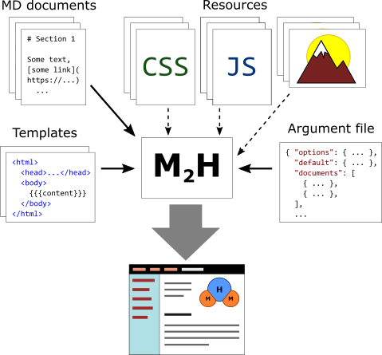

HomeInstallationUsageIndex
HomeInstallationUsageIndex GitHub
</>
GitHub
</>
Overview

M2H accepts the following artifacts as its input:
The program processes these artifacts and generates a set of static HTML pages that may represent a coherent documentation site with a sidebar menu, navigation, index, and other elements.
The following subsections describe the above artifacts in more detail.
These texts comprise the main documentation content written by the author in Markdown language. Page metadata may be used to activate extra functions provided by plugins.
Markdown is a formatting syntax whose main goal is to make texts that are as readable as possible in plain text. This syntax is very simple and allows writing very fast. It has enough features for writing a variety of document kinds. Because of its simplicity, it's quite restricted and contains just a very small subset of HTML features, but it allows direct inclusion of HTML code that helps achieve more complex results when needed.
The "Page content" section describes the methods, tricks and elements that may be used during content writing.
An HTML artifact that is generated from a Markdown text is not a complete HTML page. It's
just a fragment that must be put inside the <body>...</body> HTML element. A template may
be considered an HTML page that doesn't have the main content but specifies a placeholder
where this main content must be inserted.
See here for more details about templates and other placeholders that may be used.
The argument file defines the set of input source files and different parameters for the HTML documents generation. See here for more details.
Different resources, like CSS, JavaScript and images are not processed by the program. The program may just adjust the location of these resources while inserting links to them into specific pages. This is usually done by plugins.
M2H is a static site generator that means that every output HTML page contains everything required for display, including such repeated elements like menus and sidebars. There's no server that could generate these elements on the fly. This approach speeds up navigation and, even for quite large and complex sites, should not be a significant overhead. But if the site is very huge, its full regeneration may take noticeable time (like 5 seconds or so). Also, e.g., index plugin doesn't have pagination, and with enormous number of terms the index page may become pretty heavy. So if the writing project becomes too large it may be good to consider splitting it into several projects.
M2H doesn't restrict HTML code inside the Markdown texts. Particularly, these texts may contain JavaScript that will be translated unchanged into the generated HTML page. This must not be a problem for personal use but may be a security issue when converting and publishing source texts from untrusted third parties. Click the image below to see how it may look like.
Tip
If you're concerned, first have a look at the source text by clicking the "Source text"
link ("</>") at the page top. Also, you can view the HTML text
(Ctrl+U in most browsers).
M2H was born in about 2019 as a Python script of about 50 lines of code written in about one hour. It was used for writing notes for a computer science study course. Then this solution was used for the other writing works and, as the requirements grew, it developed up to the current state.
As for the Java implementation, it appeared as a response to the lack of Python in an environment where the program was going to be used. For now the Java implementation slows down the development as it needs writing the same things in two languages. Still it's going to be supported as it provides an additional level of platform independence.
There's Pelican [pelican] static site generator that may be considered quite close to M2H by its functionality. It looks mature and feature-rich enough, and has a similar motivation, see Some history about Pelican.
Pelican is written in Python only, uses the same Python-Markdown module [py_markdown] and also supports another markup language — reStructuredText.
The main difference may be described the following way: